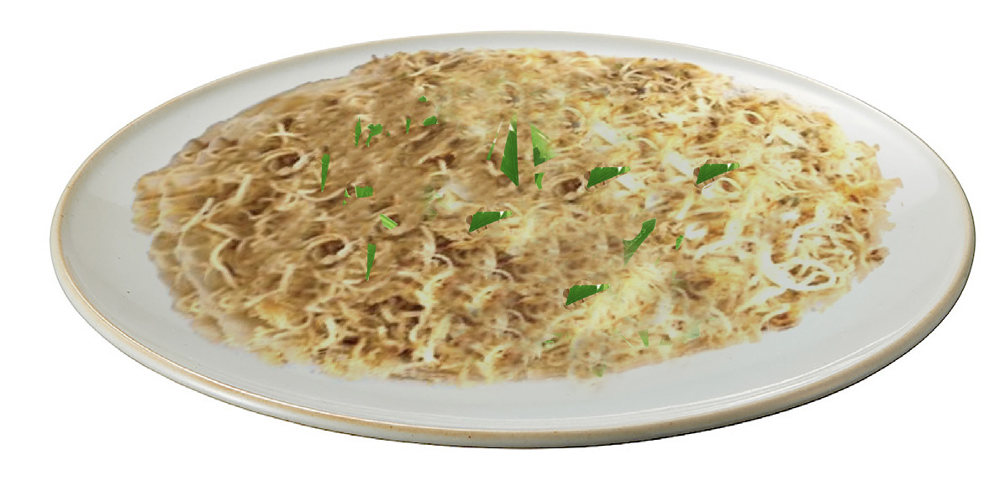

Food and Human Nutrition
Form Two
Method
1. Boil the water.
2. Put the oil in a different pan. Add ground cardamom and stir it for a minute.
Use medium heat.
3. Add broken vermicelli and continue stirring it until the vermicelli attains the golden-brown colour.
4. Add sugar or salt and enough boiled water to cover them, stir them well and leave to boil.
5. When you do not see water above the vermicelli, reduce the heat and allow it to simmer until it is cooked and it is dry.
6. Serve it on a plate and garnish it with parsley leaves or any suitable garnish as shown in Figure 2.7.

Figure 2.7: Fried vermicelli
Activity 2.9
Preparation of fried vermicelli dish
Prepare, cook and serve fried vermicelli dish.
(i) Describe how you have prepared the garnishes used.
(ii) Suggest suitable accompaniments that can be used with the dish.